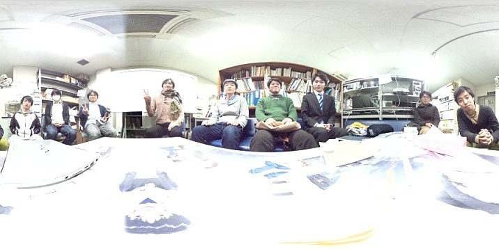
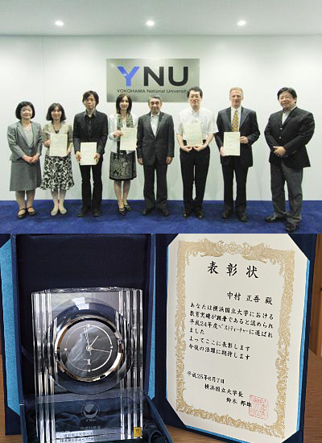

中村研ニュース（2013年度）
M2の夏目とM1の水上，中村が日本物理学会年次大会で登壇［2014年3月］
3月27日（木）から30日（日）まで，日本物理学会第69回年次大会が東海大学湘南キャンパスで開催され，27日に中村研の博士課程前期２年の夏目と同１年の水上がそれぞれ登壇しました。 講演のタイトルは，夏目が「LiteBIRDに向けた宇宙前景輻射除去法の検討」，水上が「LiteBIRDに向けたデータプロセッシングの検討」で，それぞれ，高エネルギー加速器研究機構他と共同で進めている 宇宙マイクロ波背景放射のＢモード偏光観測計画LiteBIRDのためのシミュレーション研究について発表しました。 また，30日（日）には中村が登壇し，「液体キセノンの赤外発光の測定」というタイトルで講演しました。修士生３名と学部生５名が修了・卒業［2014年3月］
3月26日（水）に修了式・卒業式が行なわれ，中村研も修士生３名と学部生５名が無事に修了・卒業して学位が授与されました。 修了・卒業したメンバーは次の通りで，４年生は全員が進学して，そのうち２人は中村研に残ります。- 修士修了
- 大山 修平，夏目 浩太，吉田 真央
- 学部卒業
- 入江 郁也，小野 隼人，御供田 崇，長井 真也，本吉 祐士
M2の夏目が日本天文学会年会で登壇［2014年3月］
3月19日（水）から22日（土）まで，日本天文学会第68回年会が国際基督教大学で開催され，20日に博士課程（前期）２年の夏目が登壇しました。 講演のタイトルは「LiteBIRDにむけた宇宙前景放射除去法の検討」で，高エネルギー加速器研究機構他と共同で進めている宇宙マイクロ波背景放射の Ｂモード偏光観測計画LiteBIRDのための高度なバックグラウンド除去方法のシミュレーション研究について発表しました。OBの高木雄太氏が来訪［2014年3月］
3月7日（金）に，中村研OBの高木雄太氏（現・旭化成エレクトロニクス）が会社説明会のために来訪しました。学部４年の５人の学部生が卒論発表会で発表［2014年2月］
2月21日（金）に工学部知能物理工学科の卒論発表会が開かれ，中村研の５人の学部４年生が発表を行ないました。発表のタイトルは次の通りです。
◎入江 郁也：「ダークエネルギー探査のためCosmic Shearの解析シミュレーション」◎小野 隼人：「近紫外領域におけるNd:LuLiF4の発光スペクトルの測定」
◎御供田 崇：「シンチレータの発光時間特性測定に向けたLED光源の試作」
◎長井 真也：「液体キセノンの赤外発光測定におけるγ線によるノイズの除去の研究」
◎本吉 祐士：（非公開）
M2の３人の院生が修論・ポートフォリオ発表会で発表［2014年2月］
2月12日（水）〜14日（金）に工学府物理情報工学専攻物理工学コースの修論・ポートフォリオ発表会が開かれ，14日（金）に中村研の博士課程前期２年の３人の院生が発表を行ないました。発表のタイトルは次の通りです。
◎大山 修平：「液体キセノンシンチレータの基礎研究のためのガスハンドリングシステムの改良」（ポートフォリオ）◎夏目 浩太：「宇宙マイクロ波背景放射のBモード偏光検出のための前景放射除去法の研究」
◎吉田 真央：「液体キセノンの赤外発光測定のためのSN比向上手法の研究」
中村が神岡鉱山でXMASS実験のシフトに参加［2014年2月］
2月8日（土）と9日（日）に，中村が記録的大雪の首都圏を苦労して脱出し，神岡鉱山で進められている暗黒物質探索実験XMASSのシフトを行ないました。中村が「放射線検出器とその応用」研究会で講演［2014年1月］
1月28日（火）〜30日（木）に第28回「放射線検出器とその応用」研究会（高エネルギー加速器研究機構放射線科学センターと応用物理学会・放射線分科会との共催）が高エネルギー加速器研究機構（つくば）で開催され，29日（水）に中村が講演しました。タイトルは「液体キセノンの赤外発光の測定」で，高エネルギー加速器研究機構と共同で開始した，液体キセノンの赤外発光の系統的な測定実験について，その研究計画の概要と準備状況を発表しました。OBの尾崎雄一氏が来訪［2014年1月］
1月28日（火）に，中村研OBの尾崎雄一氏（現・コニカミノルタオプト）が会社説明会のために来訪しました。OBの遠藤雄也氏が来訪［2014年1月］
 1月27日（月）に，中村研OBの遠藤雄也氏（現・リコー）が会社説明会のために来訪しました。次年度の新卒研生として４人が仮配属［2014年1月］
1月23日（木）に，中村研の平成26年度の新卒研生として4人が仮配属されました。宇宙科学シンポジウムでＭ2の夏目，M1の水上が発表［2014年1月］
1月9日（木），10日（金）に宇宙航空研究開発機構で第14回宇宙科学シンポジウムが開かれ，両日に博士課程前期２年の夏目，博士課程前期１年の水上が， 宇宙のインフレーションモデルの検証を目指す共同研究，宇宙マイクロ波背景放射のＢモード偏光観測衛星計画LiteBIRDのポスター発表をしました。 夏目の発表のタイトルは，「LiteBIRDに向けた宇宙前景輻射除去法の検討」，水上の発表のタイトルは，「LiteBIRDに向けたデータプロセッシングの検討」でした。中村が神岡鉱山でXMASS実験のシフトに参加［2013年12月］
12月30日（月）に，中村が，神岡鉱山で進められている暗黒物質探索実験XMASSのシフトを行ないました。Ｍ2の濱西が仏国ナントのSubatechで研究［2013年12月］
M2の濱西が，10月1日から12月29日まで，フランスのナントにあるSubatechに出張し研究をしました。研究課題は，小動物用の小型液体キセノンPETのXEMIS2に関するシミュレーションでした。中村研の忘年会は中止に［2013年12月］
12月26日（木）に予定されていた中村宅での中村研の忘年会は，中村家の事情により中止になりました。期待していた皆様，申し訳ありません。中村が東京大学宇宙線研究所 共同利用研究成果発表会で講演［2013年12月］
12月20日（金），21日（土）に，東京大学宇宙線研究所の共同利用研究成果発表研究会が東京大学宇宙線研究所（柏キャンパス）で開催され，中村も発表を依頼されて20日（金）の午後に講演を行ないました。講演のタイトルは「液体キセノンシンチレータの赤外発光の研究」で，今年度から本格的に開始した研究の現状を手短に報告しました。【連絡】中村研に関心をお持ちの３年生へ［2013年12月］
本Web内の研究テーマの情報は古いものもあり，更新には多少時間が掛かりそうです。研究内容に関する最新の情報は，研究室に来て頂いてお確かめ下さい。お手数をお掛けしますが，どうぞよろしくお願いします。 なお，卒研配属を考えている学部３年生へ向けたメッセージを載せています。>> メッセージのページ
Ｍ2の夏目とM1の水上がLiteBIRDの合宿に参加［2013年12月］
12月12日（木），13日（金）に，博士課程前期２年の夏目と博士課程前期１年の水上が高エネルギー加速器研究機構においてLiteBIRD計画で必要となるパイプライン処理に関する合宿に参加しました。中村がYNUサイエンスカフェでファシリテータを担当［2013年12月］
12月11日（水）に第41回YNUサイエンスカフェ「“美しい文字”のメカニズムとその書き方トレーニング」が本学の教育文化ホールにて開催され，中村もファシリテータを担当しました。Ｍ2の岩崎が「ニュートリノフロンティア」研究会で発表［2013年12月］
12月7日（土），8日（日）にクロス・ウェーブ府中で新学術領域研究「ニュートリノフロンティア」研究会が開催され，初日に博士課程前期２年の岩崎が口頭発表をしました。発表のタイトルは，「液体アルゴンTPCのための信号読み出し回路開発〜極低温下での作動回路を目指して〜」で，低温で動作する放射線計測用の信号処理回路の開発について発表しました。中村がFD推進部主催の公開授業を実施［2013年12月］
今年度に中村がベストティーチャー賞を受賞した関係で，12月4日（水）に，中村が本学FD推進部主催の公開授業を行ないました。授業は「物理工学実験情報演習III」で，物理の研究で必要な真空の作り方と２極管の電流電圧特性（真空下での熱電子の挙動）の測定を指導しました。中村がYNUサイエンスカフェの司会を担当［2013年11月］
11月29日（金）に第40回YNUサイエンスカフェ「不思議の国 日本の能」が横浜ビジネスパークにて開催され，中村が司会をしました。液体キセノンの実験装置を横浜国立大学に移設［2013年11月］
11月28日（木），29日（金）に，高エネルギー加速器研究機構の放射線科学センターに設置していた液体キセノンの実験装置を横浜国立大学の当研究室に移設しました。今後は，液体キセノンに関する実験の多くは本学にて遂行することになります。中村がYNUサイエンスカフェの司会を担当［2013年11月］
11月7日（木）に第39回YNUサイエンスカフェ「快適衣服を科学する」が横浜ビジネスパークにて開催され，中村が司会をしました。【おくやみ】道家忠義先生ご逝去［2013年10月］
10月2日（水）午前に，早稲田大学名誉教授の道家忠義先生が８５歳でご逝去されました。道家先生は，本邦における放射線検出器研究の大御所であられましたが，中村も院生時代から携わってきた複数の共同研究を通して直接にお世話になりました。 中村研では以前に，プラスチック飛跡検出器CR-39やガラス飛跡検出器BP-1を用いた研究を手掛けましたが，道家先生はこれら固体飛跡検出器研究における本邦のパイオニアでした。また，現在中村研で進行中のキセノンシンチレータの研究についても，道家先生は希ガスシンチレータの開祖として世界的に知られた方でした。これらご生前の重要なお仕事に感謝申し上げるとともに，心よりご冥福をお祈りいたします．．．Ｍ2の夏目とM1の水上が大阪府立大学でLiteBIRDの合宿に参加［2013年9月］
9月24日（火）から27日（金）まで，博士課程前期２年の夏目と博士課程前期１年の水上が，大阪府立大学で行われたLiteBIRD計画に関する合宿に参加し，岡山大学，KEKのCMBグループ，カブリIPMU，大阪府立大学のスタッフおよび学生とのあいだで，我々が進めている研究に関して様々な情報交換を行ないました。間違った情報にご注意下さい！［2013年9月］
一部の情報サイトにおいて，当研究室の学生が社会道徳に反する行動に関係していると疑われているようですが，事実無根で一切関係ないことをここにお知らせします。大学院工学府博士課程（前期）の一般選抜で１名合格［2013年9月］
平成26年度横浜国立大学大学院工学府博士課程（前期）の一般選抜において，本研究室を志望する受験生が１名合格しました。高エネルギー加速器研究機構との共同研究を延長［2013年8月］
高エネルギー加速器研究機構と前年度まで続けてきた共同研究「希ガスシンチレータの研究」について，今年度から２年間延長する覚書を交わしました。この研究では，従来に知られているよりも長波長でのシンチレーションに関する研究を進めていく予定です。中村がKEKサマーチャレンジ2013の演習P02を担当［2013年8月］
第７回となる夏のKEKサマーチャレンジが8月16日から24日までKEKで行われ，中村が演習テーマの１つ，「最新のシンチレーション検出器を究めよう〜光る結晶と光る液体キセノン〜」(pdf)をKEKのスタッフの協力の下に担当しました。中村研の院生がTAとして活躍してくれたお陰で，今年も本演習P02の参加者６人の皆さんは毎日充実した有意義な９日間を過ごせたと思います。なお，他の演習テーマですが横浜国大からの参加者も４名ありました。来年もサマーチャレンジは開催されると思いますので，２年生の皆さんは来年に奮ってご応募下さい！Ｍ2の夏目とM1の水上がGTC Japan 2013で発表［2013年7月］
7月30日（火）に六本木の東京ミッドタウンホール & カンファレンスでGPUコンピューティングの年一度の国内最大のイベント「GTC Japan 2013」が開かれ，博士課程前期２年の夏目と博士課程前期１年の水上が共同研究のポスター発表をしました。発表のタイトルは，「宇宙背景放射(CMB)解析へのMulti-GPU利用」で，宇宙のインフレーションモデルの検証を目指す宇宙マイクロ波背景放射観測衛星計画LiteBIRDのために，巨大な行列の高速な演算処理をGPGPUによりPCレベルで可能にした成果を発表しました。大学院工学府博士課程（前期）の特別選抜で２名合格［2013年7月］
平成26年度横浜国立大学大学院工学府博士課程（前期）の特別選抜において，本研究室を志望する受験生が２名合格しました。中村が高校生に研究と研究室を紹介しました［2013年7月］
7月25日（木）に，神奈川の県立高校の生徒さん９人が引率の先生と共に，中村研究室の見学に訪れました。最初に，ミニサイエンスカフェ（タイトルは，「宇宙と素粒子の面白さー 宇宙素粒子物理の世界 ー」）を実施して，中村が話題提供をして活発な議論が行なわれました。後半は，実験室において実物を交えて研究を紹介し，その後は研究室の学生との懇談を行ないました。中村自身も高校生の時に大学の研究所の研究室に訪れていろいろ教わった経験もありますので，このような見学会を通じて，高校生の皆さんに大学を知って頂き，さらに少しでも宇宙や素粒子の面白さを感じてもらえたなら幸いです。
中村が横浜国立大学サイエンスカフェのコーディネータを担当［2013年7月］
2013年度も中村が横浜国立大学サイエンスカフェのコーディネータを務めており，7月19日（金）に横浜ビジネスパークにて開催された第37回横浜国立大学サイエンスカフェ「建築メディアの新しいあり方を求めて」でも，準備段階からお手伝いをしました。M1の岩崎が計測システム研究会2013で発表［2013年7月］
7月10日（水），11日（木）に自然科学研究機構の核融合科学研究所で計測システム研究会2013が開かれ，２日目に，中村研の博士課程前期１年の岩崎が，「液体アルゴンTPCのための信号読み出し回路開発〜極低温下での作動回路を目指して〜」というタイトルで20分の発表を行ないました。Ｍ2の夏目とM1の水上がCMB2013国際会議で発表［2013年6月］
6月10日（月）〜14日（金）に沖縄科学技術大学院大学で宇宙マイクロ波背景放射に関するCMB2013国際会議が開かれ，博士課程前期２年の夏目と博士課程前期１年の水上が共同研究のポスター発表をしました。発表のタイトルは，"Simple Foreground Clean Algorithm for Detecting B-mode polarization for CMB"で，宇宙のインフレーションの名残を残していると考えられている宇宙マイクロ波背景放射のBモード偏光観測のための，前景放射の除去アルゴリズムに関する成果を発表しました。中村が平成24年度横浜国立大学ベストティーチャー賞を受賞［2013年6月］
 中村が他の7名の教員と共に平成24年度横浜国立大学ベストティーチャー賞を受賞し，6月7日（金）に学長室においてベストティーチャー賞授与式が行われました。授与式の冒頭，学長から今後のさらなる教育方法改善に期待を込めた挨拶があり，表彰状及び記念品（右下写真）を戴きました。この賞は，本学において優れた教育を行っている教員を表彰し，その教育方法を大学全体に伝え，大学全体の教育方法改善の契機とすることを目的としているとのことですので，この賞に恥じないように今後も努力を続けていきたいと思います。
（全学Webサイトのニュースはこちら）
KEKサマーチャレンジ2013に多数のご応募［2013年5月］
第７回となる夏のKEKサマーチャレンジに，例年以上に多くの方からご応募がありました。結果として選考に漏れた方も多いと思いますが，僅かな差によるものと思います。また別の機会に自己研鑽に励んで欲しいと心から願っています。中村がKEKサマーチャレンジ2013の演習を担当予定［2013年4月］
第７回となる夏のKEKサマーチャレンジが，今年も，8月16日（金）〜24日（土）にKEKで行われます。中村も液体キセノンに関する演習テーマを受け持ち，KEKのスタッフのご協力の下に担当します。また，中村研の院生もTAとして活躍する見込みです。応募要領がhttp://ksc.kek.jp/以下に公表され，〆切は5月16日（木）ですので，今年も（主に）大学３年生の皆さんは，横浜国大内外から奮ってご応募下さい！２人が大学院に進学し，５人が卒研配属しました［2013年4月］
2013年度がスタートし，進学した新Ｍ１の２人と新４年生５人が研究室に配属されました。- 濱西 亮（M1）
- 水上 邦義（M1）
- 入江 郁也（B4）
- 小野 隼人（B4）
- 御供田 崇（B4）
- 長井 真也（B4）
- 本吉 祐士（B4）